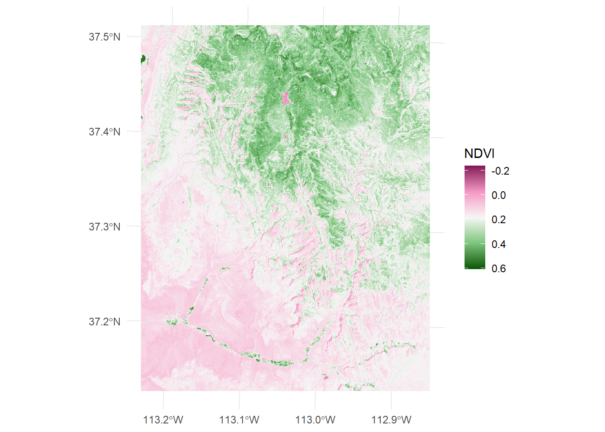

Compute Normalized Difference Vegetation Index in R
![]()
Introduction:
In this post, we’re going to learn how to compute Normalized Difference Vegetation Index (NDVI) from Landsat imagery using R. NDVI is a widely used remote sensing index that measures the health and vigor of vegetation. It’s calculated from the difference between near-infrared (NIR) and red reflectance values divided by their sum. NDVI values range from -1 to 1, with higher values indicating healthier vegetation. NDVI is an important tool for studying vegetation dynamics, land-use changes, and environmental monitoring.
Remote sensing image are useful tool that provide satellite data covering a large area and with high frequency temporal resolution. Such satellite image include Landsat. Landsat imagery is a valuable source of data for NDVI calculation. The Landsat satellites collect data in multiple spectral bands, including red and NIR, which can be used to compute NDVI.
In this post, we’ll walk through the steps of computing NDVI from Landsat imagery using R. R is a popular programming language for statistics and and provides a range of packages for processing Landsat imagery and computing NDVI. We’ll cover how to load the Landsat bands, compute NDVI, write the NDVI raster to a file, and visualize the NDVI raster. By the end of this post, you’ll be able to use R to calculate NDVI from Landsat imagery and use it for further analysis and visualization.
What is NDVI
Normalized Difference Vegetation Index (NDVI) is a remote sensing index that measures the health and vigor of vegetation. It is widely used in environmental monitoring, land-use change detection, and vegetation dynamics studies. NDVI is calculated from remotely sensed reflectance values of red and near-infrared (NIR) bands using the following formula:
\[ NDVI = \frac{NIR-Red}{NIR+Red} \]
NDVI values range from -1 to 1, with higher values indicating healthier vegetation. Negative values indicate water bodies or non-vegetated areas, while zero values indicate bare soil or areas with very low vegetation cover. NDVI has several advantages over traditional field-based methods of vegetation monitoring, such as its ability to cover large areas at once, its ability to detect changes in vegetation cover over time, and its sensitivity to changes in vegetation health.
Landsat imagery is a widely used source of data for NDVI calculation. Landsat is a series of Earth-observing satellites that collect data in multiple spectral bands, including red and NIR. The data can be downloaded for free from the United States Geological Survey (USGS) website.
Lets first load the package we are going to use in this post, if these packages are not installed in your machine, you can simply install them as they are found in CRAN
Then we load the Landsat bands. The terra package (Hijmans, 2022) has rast function which can load load the bands into the a single file. For illustration purpose, we will use landsat band from spDataLarge package (Nowosad and Lovelace, 2022). The chunk below highlight a code on how to load the file into our session:
class : SpatRaster
dimensions : 1428, 1128, 4 (nrow, ncol, nlyr)
resolution : 30, 30 (x, y)
extent : 301905, 335745, 4111245, 4154085 (xmin, xmax, ymin, ymax)
coord. ref. : WGS 84 / UTM zone 12N (EPSG:32612)
source : landsat.tif
names : landsat_1, landsat_2, landsat_3, landsat_4
min values : 7550, 6404, 5678, 5252
max values : 19071, 22051, 25780, 31961 The printed object is spatRaster object. SpatRaster is an object class in R that is used to represent spatial raster data. It is a three-dimensional array that contains data on different layers or bands, with the two spatial dimensions representing the row and column coordinates of the raster cells. In addition, our SpatRaster objects have several attributes that describe its spatial properties, such as extent, resolution, and projection.
The spatRaster object has four satellite bands - blue, green, red, and near-infrared (NIR). We can rename this band to their corresponding band names using tidyterra package (Hernangómez, 2023) function rename
class : SpatRaster
dimensions : 1428, 1128, 4 (nrow, ncol, nlyr)
resolution : 30, 30 (x, y)
extent : 301905, 335745, 4111245, 4154085 (xmin, xmax, ymin, ymax)
coord. ref. : WGS 84 / UTM zone 12N (EPSG:32612)
source : landsat.tif
names : blue, green, red, nir
min values : 7550, 6404, 5678, 5252
max values : 19071, 22051, 25780, 31961 Once we have renamed the band with appropriate band names, our next step should be to compute the NDVI formula into an R function. Thanks again to tidyterra package that has simplified computation of spatRaster object using verbs similar to tidyverse package (Wickham and Wickham, 2017). For us we are going to compute the ndvi as separate band in the spatraster object using mutate function. NDVI can be computed using the formula mentioned above. Here’s the code:
class : SpatRaster
dimensions : 1428, 1128, 5 (nrow, ncol, nlyr)
resolution : 30, 30 (x, y)
extent : 301905, 335745, 4111245, 4154085 (xmin, xmax, ymin, ymax)
coord. ref. : WGS 84 / UTM zone 12N (EPSG:32612)
source(s) : memory
names : blue, green, red, nir, ndvi
min values : 7550, 6404, 5678, 5252, -0.2352531
max values : 19071, 22051, 25780, 31961, 0.6076995 The printed spatRaster object has added a fifth layer as ndvi. The ndvi object now contains the computed NDVI values for each pixel. The computed NDVI raster can be visualized using various R packages, such as rasterVis or ggplot2 (Wickham, 2016). Here’s an example using ggplot2 with additional function from tidyterra package: This code will produce a color-coded plot of the NDVI raster, with higher values shown in shades of green and lower values shown in shades of brown.

Summary
In this post, we’ll walk through the steps of computing NDVI from Landsat imagery using R. Specifically, we’ll cover how to load the Landsat bands, compute NDVI raster to a file, and visualize the NDVI raster. I hope the information in this post can help you to use R to calculate NDVI from Landsat imagery and use it for further analysis and visualization.